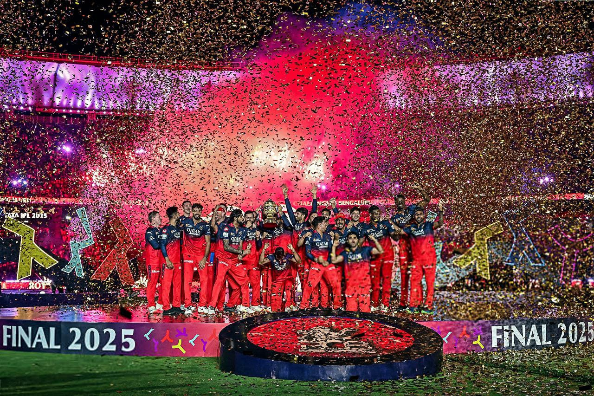

Royal Challengers Bengaluru, also known as RCB, formerly Royal Challengers Bangalore, are a professional Twenty20 cricket team based in Bengaluru, Karnataka, that competes in the Indian Premier League. They won their first title in 2025.The team finished as the runners-up on three occasions in 2009, 2011, and 2016, and have also qualified for the playoffs in ten of the eighteen seasons.
As of 2026, the team is captained by Rajat Patidar and coached by Andy Flower. The franchise has competed in the Champions League Twenty20, finishing as runners-up in the 2011 season. As of 2024, RCB's brand value was estimated at $117 million, making it one of the most valuable IPL brands.[5] Founded in 2008 by United Spirits, the franchise is owned by the Aditya Birla Group, the The Times Group and Blackstone since 2026.The team was acquired for a record $1.78 billion, representing the highest valuation for a franchise in IPL history..

Visit this link : Click Here